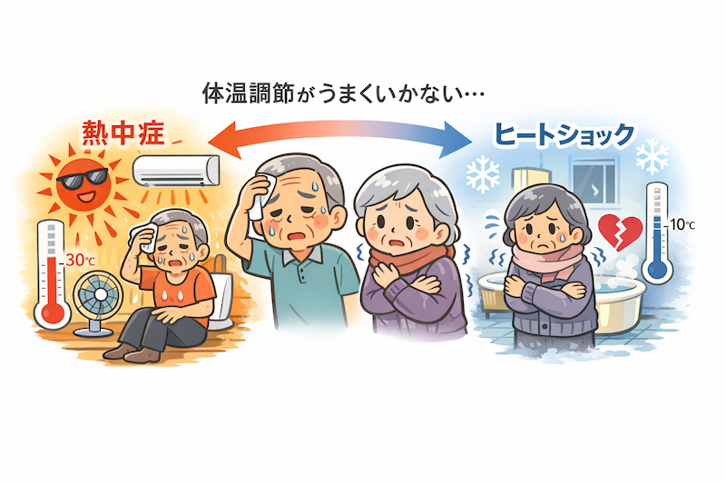

公開日：2026年6月｜最終更新：2026年6月
第１章 はじめに
人の体は、暑いときには汗をかき、寒いときには体温を保つように働くことで、体温をほぼ一定に保っています。
しかし、年齢を重ねるとこの「体温調節の働きが少しずつ弱くなる」ことが知られています。
そのため、高齢者では「暑さと寒さのどちらにも注意が必要」になります。
第２章 高齢者はなぜ暑さに弱いのか
夏に問題になるのは「熱中症」です。
高齢者では、次のような理由で体温が上がりやすくなります。
- 汗をかく力が弱くなる
- 皮膚の血流調節が低下する
- 暑さを感じにくくなる（コラム参照）
- のどの渇きを感じにくくなる
そのため、室内にいても体温が上昇し、「気づかないうちに熱中症になる」ことがあります。
実際、日本では熱中症による救急搬送の「半数以上が高齢者」とされています。
コラム：高齢者は暑さ寒さを感じにくくなる？
年齢を重ねると、「皮膚の温度を感じる感覚（神経機能）」が少しずつ低下します。
若い人なら「暑い」「寒い」と感じる環境でも、高齢者ではそれほど強く感じないことがあります。
特に夏は、「室温が高くても気づきにくい」「のどの渇きを感じにくい」という特徴があります。
このため「熱中症」は、自宅の室内でも多く発生しています。
ポイント（エアコンの使用）
- 室温：26～28℃程度
- 湿度：40～60％
- 扇風機併用可
- 就寝中も冷房を使用
「暑く感じてから使うのでは遅い」
第３章 冬にも注意が必要
冬には「低体温症」や「ヒートショック」が問題になります。
寒い環境では血圧が上がり、心臓や血管への負担が大きくなります。
特に注意が必要なのは「入浴時の温度差」です。
暖かい部屋から寒い脱衣所や浴室に移動すると、
などが起こり、体に大きな負担がかかることがあります。
コラム：冬の入浴はなぜ危険なのか
冬に問題になるのが「ヒートショック」です。
暖かい部屋から寒い場所へ移動すると血圧が急上昇し、さらに熱い湯で低下します。
この急激な変化が心臓や血管に負担をかけます。
ヒートショック対策
- 脱衣所を温める
- 浴室を事前に温める
- 湯温は40℃前後
- 長湯を避ける（10～15分）
- 入浴前に家族へ声かけ

第４章 実は大切なのは「室温」
高齢者の健康を守るために重要なのは、「我慢しない室温管理」です。
- 夏はエアコンを適切に使用
- 冬は脱衣所や浴室も暖める
- 水分補給を意識する
コラム：エアコンを使わない理由
高齢者がエアコンを使わない理由として、
「電気代」「冷えすぎ」「まだ我慢できる」などがあります。
しかし、我慢は必ずしも安全とは言えません。
第５章 まとめ
季節に応じて環境を整えることが、健康を守るポイントです。
第６章 おまけ
(1) 熱中症対策としての水分摂取
高齢者ではのどの渇きを感じにくいため、意識的な水分摂取が必要です。
水分摂取の目安
約1.5L／日（飲料）※食事以外
摂取のコツ
- こまめに飲む（100～200ml）
- 時間を決める（起床時・食事時・入浴前後・就寝前）
- 大量発汗時は経口補水液などを活用
(2) 生活指導のポイント
| 項目 |
目安 |
| 夏の室温 |
26～28℃ |
| 入浴温度 |
約40℃ |
| 水分摂取 |
約1.5L/日 |
| たんぱく質 |
1.0～1.2g/kg/日 |
参考文献
- 厚生労働省：熱中症予防に関する資料
- 厚生労働省：健康づくりのための生活習慣指針
- 消費者庁：高齢者の事故防止（ヒートショック）
- 日本老年医学会：高齢者診療ガイドライン
- 日本老年医学会：フレイル診療ガイド
- 標準生理学（医学書院）
- Kenney WL, Munce TA. Aging and human temperature regulation. J Appl Physiol
※本ページは公的機関および学会の情報をもとに作成しています。